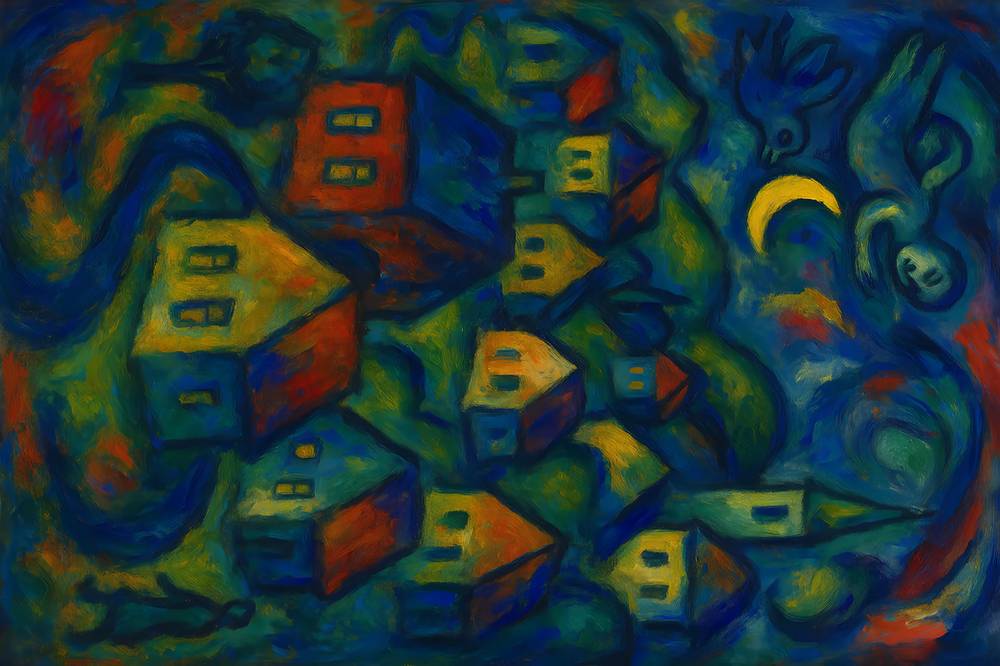

Yla is a lightweight, privacy-focused AI chatbot application that runs completely locally using Ollama. It enables users to interact with powerful open-source large language models without sending data to external servers, ensuring complete data privacy and avoiding cloud breaches.
Yla offers a compelling set of features focused on privacy, flexibility, and control:
<think> tagYla is built with simplicity and efficiency in mind:
Yla provides comprehensive model management capabilities:
One of Yla's powerful features is the ability to create and use specialized AI assistants:
Users can create personalized AI assistants by defining Modelfiles with specific instructions and parameters:
# Example: technical-assistant.txt
FROM deepseek-r1:7b
SYSTEM """
You are an expert technical assistant.
Respond in markdown format with detailed explanations.
"""
PARAMETER num_ctx 32768Yla uses a flexible configuration system to manage models and their parameters:
// config.js
const config = {
models: [
{
name: "Yla:latest", // Must match Ollama model name
num_ctx: 65536, // Context window size
temperature: 0.7, // 0-2 (0=precise, 2=creative)
top_k: 40, // 1-100
top_p: 0.9, // 0-1
systemMessage: "Friendly general assistant",
size: "4.1GB"
}
],
api: {
endpoint: "http://localhost:11434/v1/chat/completions",
available_models: "http://localhost:11434/v1/models",
}
};| Field | Description | Example |
|---|---|---|
name |
Ollama model name (exact match required) | "my-expert:latest" |
description |
Brief description (optional) | "smart coding assistant" |
size |
Size of the model (informational only) | "4.1GB" |
num_ctx |
Context window size (tokens) | 32768 |
systemMessage |
Hidden behavior instructions | "You are an expert..." |
temperature |
Response creativity (0.3-1.8) | 0.7 |
Yla's architecture is elegantly simple:
Yla offers significant advantages for privacy-conscious users:
For optimal performance with Yla:
num_ctx) for memory constraints